Sorting, Searching & Unique Values in NumPy
NumPy arrays ko effectively order karna, specific elements & extremes dhoondhna, binary search insertion karna, aur distinct unique categories analyze karne ka comprehensive guide: np.sort(), ndarray.sort(), axis control, np.argsort(), np.where(), np.argmax()/argmin(), np.searchsorted(), aur np.unique().
01. Opening Story — Find the Class Topper
Imagine karo tum ek school ya data science academy ke teacher ho. Exam ke baad tumhare paas 7 students ke raw test marks ka ek NumPy array hai:
import numpy as np marks = np.array([78, 92, 65, 92, 85, 65, 99]) print("Original marks:", marks) print("Sorted marks :", np.sort(marks)) print("Highest marks :", np.max(marks)) print("Lowest marks :", np.min(marks)) print("Unique marks :", np.unique(marks))
Notice karo ki ek single dataset humse teen alag-alag analytical sawaal poochhta hai:
- Sorting ka sawaal: "Values kis order mein hain?" — Ascending order dekhne se hume instantly lowest se highest marks ka distribution mil gaya.
- Searching ka sawaal: "Extreme values kahan hain ya condition kahan match hoti hai?" — Class topper (99) aur lowest score (65) find ho gaye.
- Unique values ka sawaal: "Kaun-kaun si distinct values present hain?" — Repeated scores (jaise 65 aur 92) collapse ho kar sirf distinct score boundaries reveal ho gayi.
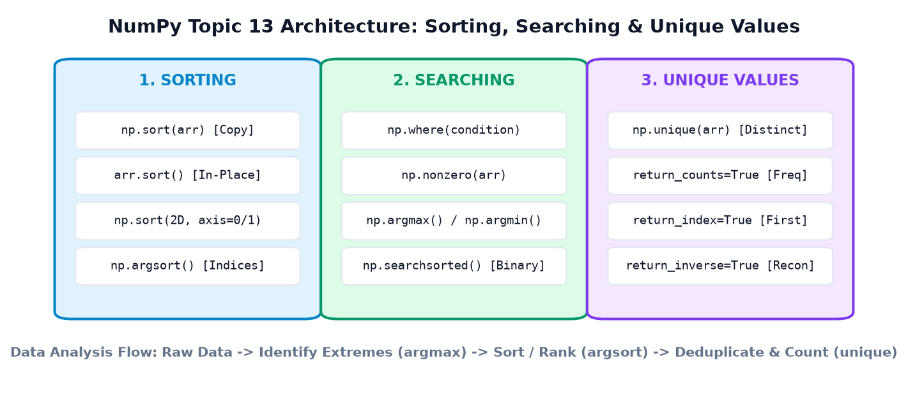
02. Section A — Sorting Basics with np.sort()
Sorting ka matlab hota hai array ke elements ko kisi defined systematic sequence (chote se bada — Ascending, ya bade se chota — Descending) mein re-arrange karna.
NumPy ka primary sorting function hai np.sort(a). By default, ye array ko Ascending Order (increasing numerical value) mein sort karta hai aur humesha ek naya sorted array copy return karta hai.
Example 1: Sorting Student Marks
import numpy as np marks = np.array([72, 95, 61, 84, 78]) sorted_marks = np.sort(marks) print("Original:", marks) print("Ascending:", sorted_marks) print("Descending:", np.sort(marks)[::-1])
Descending order kaise mila? NumPy ke np.sort() mein koi direct reverse=True parameter nahi hota (jaise standard Python list mein hota hai). Lekin kyunki np.sort() ek 1D array return karta hai, hum Python ke negative step slicing [::-1] ka use karke sorted array ko instantly reverse kar lete hain!
Example 2: E-Commerce Product Price Sorting
E-commerce websites (jaise Amazon, Flipkart) par jab user "Sort by: Price - Low to High" ya "High to Low" click karta hai, toh backend par pricing array ko sort kiya jata hai:
import numpy as np prices = np.array([499, 199, 999, 299, 699]) print("Lowest to highest:", np.sort(prices)) print("Highest to lowest:", np.sort(prices)[::-1])
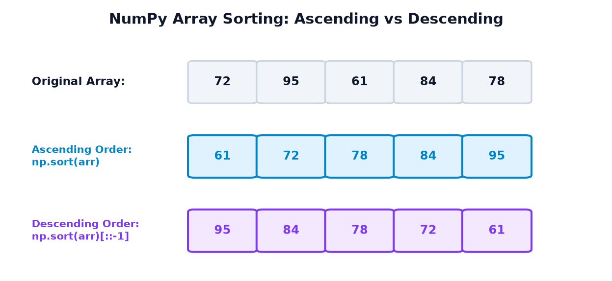
03. Section B — np.sort() versus ndarray.sort()
NumPy mein sorting perform karne ke do methods hain jo dekhne mein similar lagte hain lekin unka memory behavior bilkul opposite hota hai:
np.sort(array)— Function method: Ek naya sorted copy banata hai. Original array jaisa tha waisa hi rehta hai.array.sort()— In-place array method: Original array ke existing memory buffer ko modify kar deta hai aurNonereturn karta hai!
Example 1: Preserving Original Data with np.sort()
import numpy as np data = np.array([40, 10, 30, 20]) result = np.sort(data) print("Original:", data) print("Result :", result)
Example 2: In-Place Mutation with array.sort()
import numpy as np data = np.array([40, 10, 30, 20]) result = data.sort() print("Array after sorting:", data) print("Return value :", result)
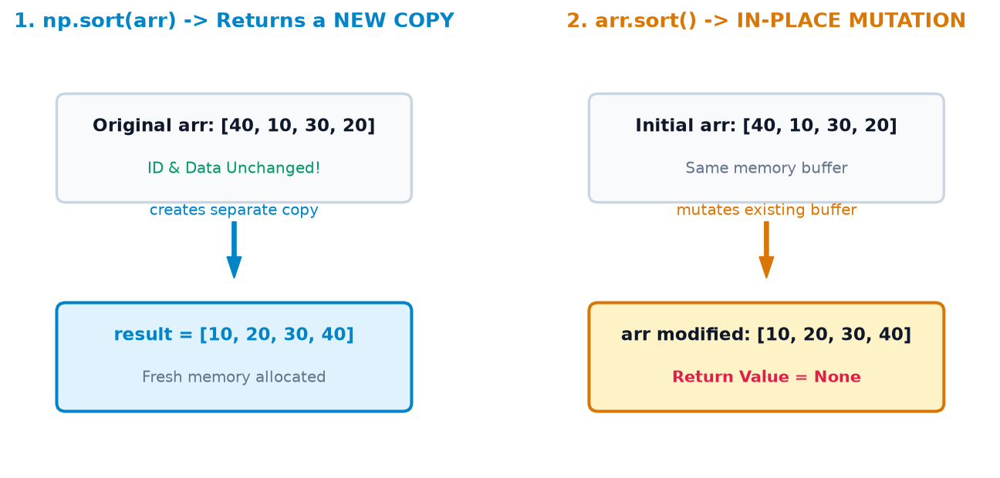
| Feature | np.sort(arr) |
arr.sort() |
|---|---|---|
| Method Type | Top-level NumPy function | ndarray instance method |
| Memory Allocation | New array memory allocated (Copy) | Zero extra memory (In-Place) |
| Original Array | Preserved untouched | Overwritten & permanently changed |
| Return Value | Sorted ndarray |
None |
| When to Use | Jab original raw data baad mein chahiye | Jab memory limit tight ho (massive arrays) |
arr = arr.sort() mat likhna! Kyunki arr.sort() ka return value None hota hai, tumhara variable arr permanently None ban jayega aur tumhara code crash ho jayega:
data = np.array([3, 1, 2]) data = data.sort() # DANGER: data is now None!
04. Section C — Sorting Multidimensional Arrays & axis
Jab hum 2D matrix (jaise student marksheet table ya sales spreadsheet) ko sort karte hain, toh hume specify karna padta hai ki sorting kis direction mein karni hai. Iske liye axis parameter use hota hai:
axis=1— Across Rows (Horizontally): Har row ke andar ke elements independently sort hote hain. Column 0 se Column n tak ascending order banta hai.axis=0— Down Columns (Vertically): Har column ke andar ke elements independently sort hote hain. Row 0 se Row n tak ascending order banta hai.
Example 1: Sorting Across Each Row (axis=1)
Suppose 3 students ke 3 subjects ke marks hain:
import numpy as np marks = np.array([ [78, 65, 90], # Student 0 [88, 72, 81], # Student 1 [60, 95, 70] # Student 2 ]) sorted_rows = np.sort(marks, axis=1) print(sorted_rows)
Notice karo ki Row 0 ke marks [78, 65, 90] sort ho kar [65, 78, 90] ban gaye. Har student ke personal scores low se high arrange ho gaye.
Example 2: Sorting Down Each Column (axis=0)
import numpy as np marks = np.array([ [78, 65, 90], [88, 72, 81], [60, 95, 70] ]) sorted_cols = np.sort(marks, axis=0) print(sorted_cols)
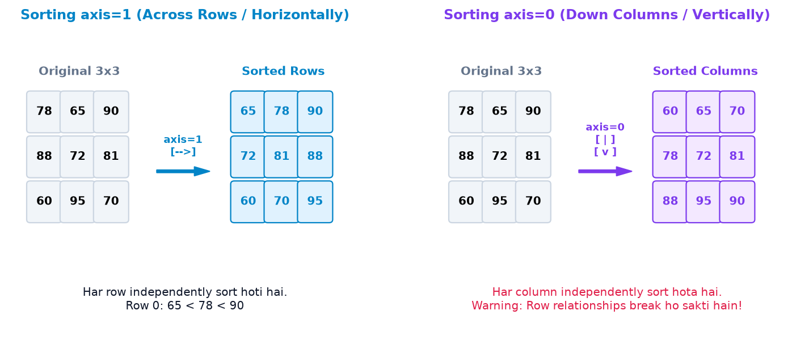
np.sort(marks, axis=0) har column ko alag se sort karta hai. Iska matlab Column 0 ka sabse chota mark (60, jo Student 2 ka tha) ab Row 0 par aa gaya, jabki Column 1 ka mark Student 0 ka hi raha! Isse poori table ka record correlation destroy ho jata hai! Agar tumhe poore students ko kisi subject ke marks ke hisaab se rank karna hai, toh np.sort() nahi balki np.argsort() use karein!
05. Section D — Sorting Indices using np.argsort()
Real-life mein hum aksar direct values ko sort nahi karna chahte, balki ye jaanna chahte hain: "Kaunsa student 1st rank par hai aur kaunsa 2nd?"
np.argsort() array ki sorted values return nahi karta, balki un index positions ka array return karta hai jo array ko sort karne ke liye chahiye! Isse hum parallel arrays (jaise Names, IDs, Salaries) ko aapas mein synchronize karke rank kar sakte hain.
Example 1: Ranking Student Marks
import numpy as np marks = np.array([78, 92, 65, 85]) indices = np.argsort(marks) print("Sorting indices:", indices) print("Sorted marks :", marks[indices])
Index mapping samajhte hain:
- Sabse chota mark
65hai, jo original array ke index2par tha. - Usse bada mark
78hai, jo original index0par tha. - Usse bada mark
85hai, jo original index3par tha. - Sabse bada mark
92hai, jo original index1par tha. - Isliye resulting index array bana:
[2, 0, 3, 1]!
Example 2: Ranking Products by Price While Keeping Product Names Paired
import numpy as np products = np.array(["Earbuds", "Laptop", "Mouse", "Keyboard"]) prices = np.array([1999, 54999, 499, 1499]) sort_idx = np.argsort(prices) print("Cheapest to Most Expensive Products:") print(products[sort_idx]) print("Corresponding Prices:") print(prices[sort_idx]) # Descending Order (Most expensive first) desc_idx = sort_idx[::-1] print("\nMost Expensive to Cheapest:") print(products[desc_idx])
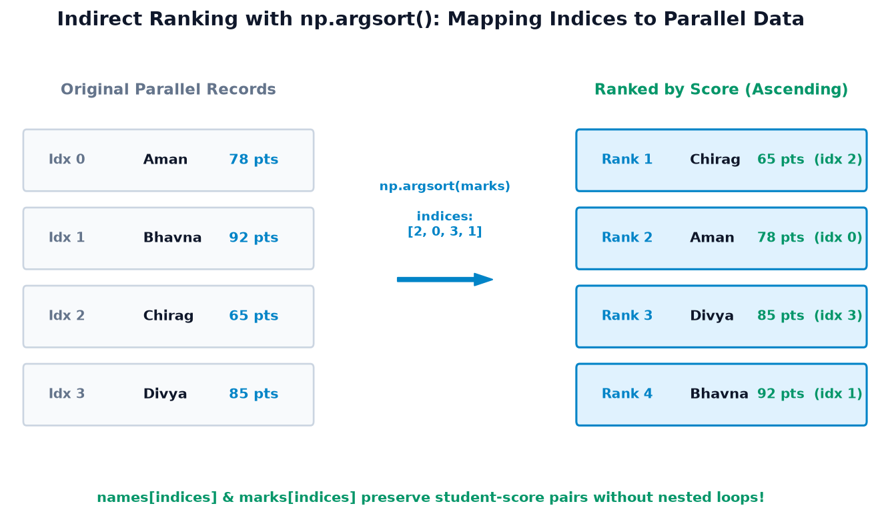
kind='stable' parameter pass karein:
idx = np.argsort(marks, kind='stable')
06. Section E — Searching with Boolean Conditions & np.where()
Sorting answers "order kya hai", jabki Searching answers "kisi condition ko satisfy karne wale elements kahan baithe hain".
NumPy mein values dhoondhne ke liye sabse common pattern hai Boolean condition ko np.where(condition) ke andar pass karna. Ye matching elements ke indices ka tuple return karta hai.
Example 1: Find Marks Above 80
import numpy as np marks = np.array([55, 82, 91, 67, 88]) indices = np.where(marks > 80) print("Matching indices:", indices[0]) print("Matching marks :", marks[indices])
Example 2: Find Exact Price Points with Duplicates
import numpy as np prices = np.array([199, 499, 299, 499, 799]) indices = np.where(prices == 499) print("Matching indices:", indices[0]) print("Matching prices :", prices[indices])
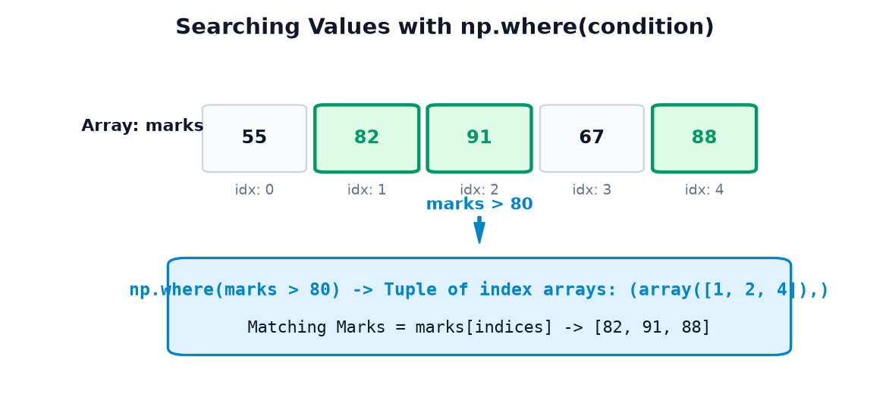
np.where(condition) internally np.nonzero(condition) ko call karta hai. Boolean condition par True ko non-zero (1) aur False ko zero (0) treat kiya jata hai. Isliye np.nonzero(marks > 80)[0] aur np.where(marks > 80)[0] identical indices return karte hain.
07. Section F — Find Minimum & Maximum Positions (argmax & argmin)
Data analysis mein hume do tarah ke sawaal milte hain:
- "Sabse bada score kya hai?" → Iska answer ek value hai (jaise 92 marks).
- "Sabse bada score kis student ka hai ya kis index par hai?" → Iska answer ek index coordinate hai (jaise index 1).
NumPy ke np.max() / np.min() actual values return karte hain, jabki np.argmax() / np.argmin() un extreme values ki index position return karte hain.
Example 1: Highest and Lowest Scoring Student Position
import numpy as np marks = np.array([78, 92, 65, 85]) print("Highest marks :", np.max(marks)) print("Index of highest marks:", np.argmax(marks)) print("Lowest marks :", np.min(marks)) print("Index of lowest marks :", np.argmin(marks))
Example 2: Peak Sales Day and Handling Tied Maximums
Suppose ek retail store ke 5 dino ki daily revenue recorded hai:
import numpy as np days = np.array(["Mon", "Tue", "Wed", "Thu", "Fri"]) sales = np.array([150, 300, 250, 300, 200]) peak_idx = np.argmax(sales) print("argmax returned index:", peak_idx) print("First peak day :", days[peak_idx]) # Find ALL tied peak days using np.where all_peaks = np.where(sales == np.max(sales))[0] print("All tied peak indices:", all_peaks) print("All peak sales days :", days[all_peaks])
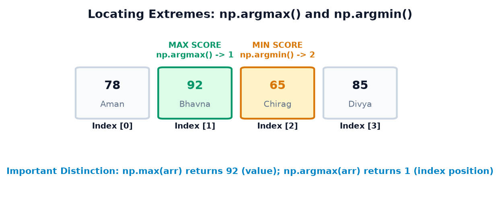
np.argmax() humesha sirf pehla occurrence index (index 1) return karega! Agar tumhe saare tied toppers ya peaks nikalne hain, toh humesha np.where(arr == np.max(arr))[0] use karein!
08. Section G — Binary Search Insertion Positions with np.searchsorted()
Beginners aksar np.searchsorted() ko normal element search samajh lete hain, jabki iska purpose completely alag hai:
Prerequisite: Array MUST be Sorted!
np.searchsorted() internally fast $O(\log N)$ Binary Search algorithm use karta hai. Isliye input array ka strictly sorted hona compulsory hai. Agar array unsorted hoga, toh output completely wrong aur unpredictable aayega.
Example 1: Where Does a New Student's Score Belong?
import numpy as np marks = np.array([50, 60, 70, 80, 90]) # Already sorted! pos = np.searchsorted(marks, 75) print("Insertion index for 75:", pos)
Index 3 par element 80 hai. Agar hum 75 ko index 3 par daal dein, toh sequence ban jayegi: [50, 60, 70, 75, 80, 90] jo perfectly sorted hai!
Example 2: Handling Duplicates with side='left' and side='right'
Agar jo value hum dhoondh rahe hain wo pehle se array mein repeat ho rahi ho, toh insertion position side parameter par depend karti hai:
import numpy as np values = np.array([10, 20, 20, 20, 30]) left_pos = np.searchsorted(values, 20, side="left") right_pos = np.searchsorted(values, 20, side="right") print("side='left' insertion index:", left_pos) print("side='right' insertion index:", right_pos)
Notice karo:
side="left"(default): Naye20ko pehle se mojud 20s ke pehle insert karta hai (index 1).side="right": Naye20ko pehle se mojud 20s ke baad insert karta hai (index 4).
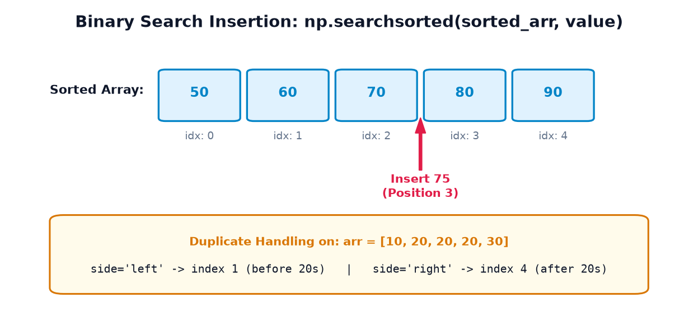
marks = np.array([50, 60, 70, 80, 90]) np.searchsorted(marks, [55, 85]) # Returns: array([1, 4])Ye feature Data Science mein continuous numbers ko categorical bins (jaise Grade brackets ya Age groups) mein divide karne ke liye extremely popular hai!
09. Section H — Unique Values Using np.unique()
Real-world data aksar repetitive hota hai — jaise e-commerce orders mein customer IDs repeat hoti hain, students ke marks identical ho sakte hain, aur sensor telemetry mein identical readings record hoti hain.
np.unique(arr) array ke saare duplicate values ko discard karke sirf distinct, unique values ka sorted array return karta hai.
Example 1: Finding Distinct Student Marks
import numpy as np marks = np.array([70, 80, 70, 90, 80, 100]) distinct_marks = np.unique(marks) print("Distinct Marks:", distinct_marks)
Example 2: Distinct Department Categories
import numpy as np depts = np.array(["Tech", "HR", "Tech", "Sales", "HR"]) unique_depts = np.unique(depts) print("Distinct Departments:", unique_depts)
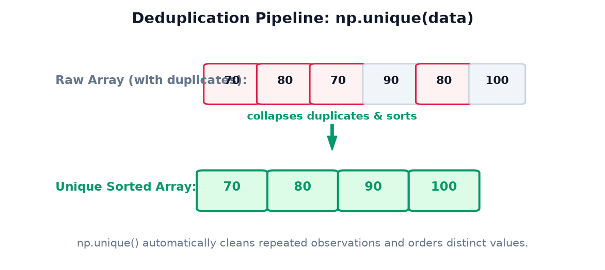
np.unique() lagayein jab aapko distinct categories ya benchmark levels analyze karne hon.
10. Section I — Count Unique Values with return_counts=True
Sirf distinct values jaanna aksar kaafi nahi hota. Data analyst ke roop mein aapko ye bhi jaanna hota hai: "Har value kitni baar repeat hui hai (Frequency Distribution)?"
Iske liye np.unique() ke andar return_counts=True pass kiya jata hai. Ye function do arrays ka tuple return karta hai:
unique_values, counts = np.unique(data, return_counts=True)
Example 1: Score Frequency Distribution
import numpy as np marks = np.array([70, 80, 70, 90, 80, 70]) unique_marks, counts = np.unique(marks, return_counts=True) print("Unique marks:", unique_marks) print("Counts :", counts)
Result se hume pata chalta hai ki 70 marks 3 students ke aaye, 80 marks 2 students ke aaye, aur 90 marks 1 student ka aaya.
Example 2: Warehouse Product Sales Frequency
import numpy as np item_codes = np.array([101, 102, 101, 103, 102, 101, 104]) u_items, counts = np.unique(item_codes, return_counts=True) for item, count in zip(u_items, counts): print(f"SKU-{item} ordered {count} times")
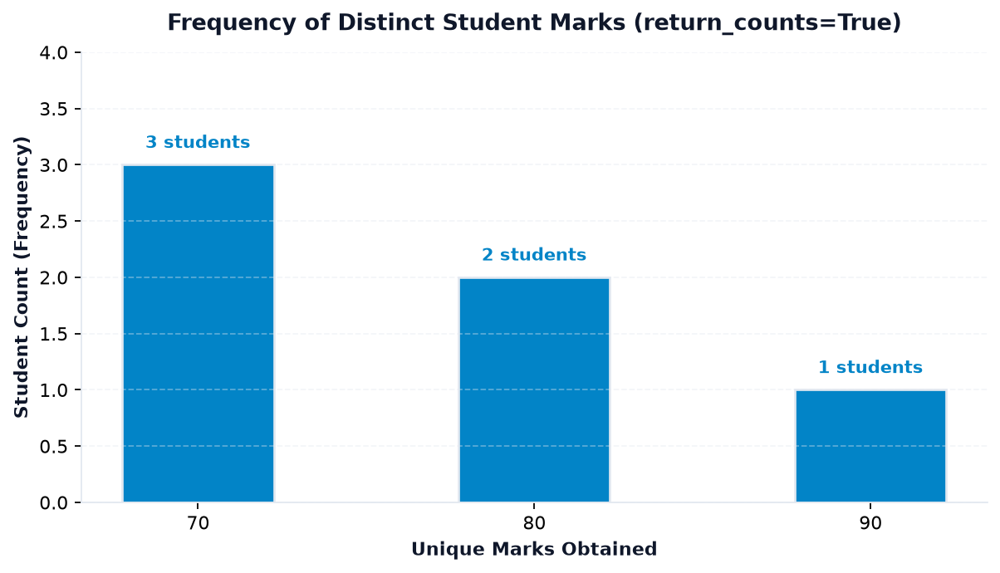
for loop lagana padta ya collections.Counter use karna padta. NumPy ka return_counts=True pure vectorized C-level hash table se millions of records ko instant frequency table mein convert kar deta hai!
11. Section J — return_index and return_inverse
np.unique() ke do advanced parameters hote hain jo intermediate aur advanced data manipulation mein frequently use hote hain:
1. return_index=True (First Occurrence Pointer)
Ye batata hai ki har unique value original array mein pehli baar kis index par aayi thi:
import numpy as np data = np.array([30, 10, 30, 20, 10]) unique_vals, first_indices = np.unique(data, return_index=True) print("Unique values :", unique_vals) print("First occurrence indices:", first_indices)
Important nuance: Notice karo ki unique_vals sorted order ([10, 20, 30]) mein hain. Isliye first_indices ka pehla element 1 value 10 ke first occurrence (index 1) ko point kar raha hai!
2. return_inverse=True (Original Array Reconstruction)
Ye parameter ek aisa index array return karta hai jisse hum unique_vals ka use karke original array ko 100% reconstruct kar sakte hain:
import numpy as np data = np.array([30, 10, 30, 20, 10]) unique_vals, inverse_indices = np.unique(data, return_inverse=True) print("Unique values :", unique_vals) print("Inverse indices:", inverse_indices) # Reconstruct original array reconstructed = unique_vals[inverse_indices] print("Reconstructed :", reconstructed) print("Match original ?:", np.array_equal(reconstructed, data))
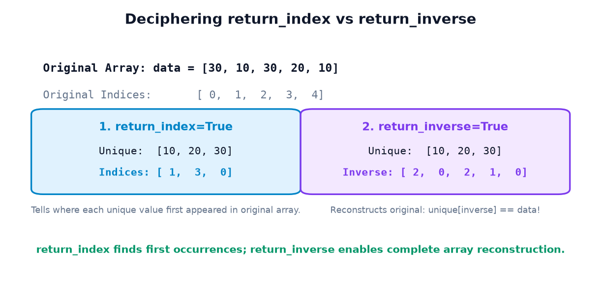
['Cat', 'Dog', 'Cat']) ko directly accept nahi karte. np.unique(categories, return_inverse=True) text labels ko zero-based integers ([0, 1, 0]) mein encode karne ka sabse efficient NumPy method hai!
12. Section K — Sorting, Searching & Unique Values Together
Data science aur machine learning pipelines mein ye teeno operations isolated nahi hote, balki ek doosre ke saath milkar data ka comprehensive diagnosis karte hain.
Integrated Case Study: Academic Exam Board Analysis
Ek university exam board ko 8 students ke marksheet array par complete analytical report generate karni hai:
import numpy as np names = np.array(["Aman", "Bhavna", "Chirag", "Divya", "Esha", "Farhan", "Geeta", "Harsh"]) marks = np.array([78, 92, 65, 85, 92, 54, 99, 70]) # 1. Searching: Identify Class Topper & Lowest Scorer top_idx = np.argmax(marks) low_idx = np.argmin(marks) print(f"Topper : {names[top_idx]} ({marks[top_idx]} marks)") print(f"Lowest : {names[low_idx]} ({marks[low_idx]} marks)") # 2. Searching: Find all students who scored >= 90 honors_idx = np.where(marks >= 90)[0] print("Honors Cohort (>= 90):", names[honors_idx]) # 3. Sorting: Rank all students from highest to lowest rank_order = np.argsort(marks)[::-1] print("\n--- Merit Ranking ---") for rank, i in enumerate(rank_order, start=1): print(f"Rank {rank}: {names[i]:<7} | Marks: {marks[i]}") # 4. Unique Values: Distinct Score Distribution u_scores, counts = np.unique(marks, return_counts=True) print("\nDistinct Scores:", u_scores) print("Score Frequencies:", counts)
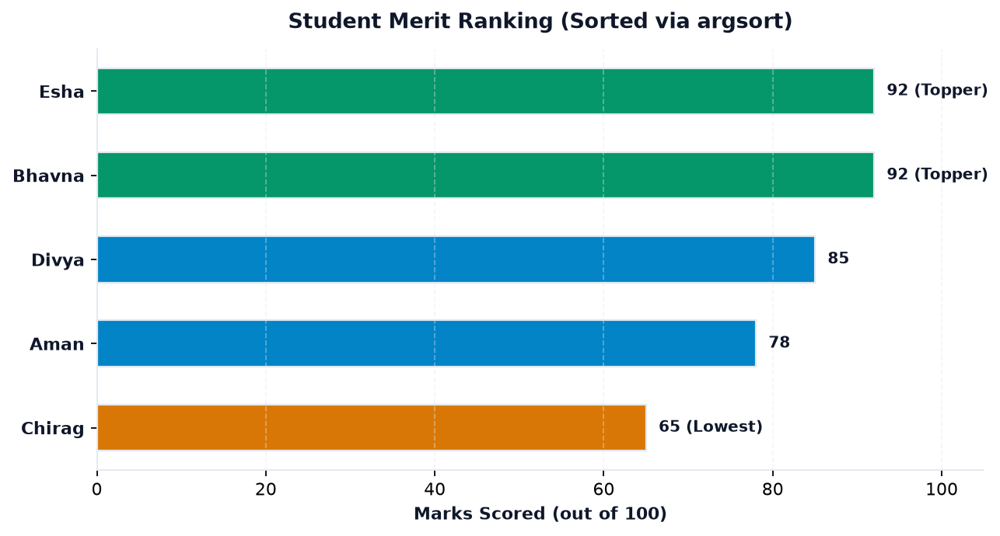
13. Section L — Sorting, Searching & Unique with NaN & Data Types
Real-world raw data clean nahi hota — usme missing measurements (NaN) aur mismatched data types hote hain. Inhe handle karte waqt kuch essential rules follow karne chahiye:
1. NaN Sorting Behavior
Floating-point arrays mein np.sort() saare NaN values ko array ke aakhri positions (end) par dhakel deta hai:
import numpy as np temps = np.array([30.0, np.nan, 10.0, 20.0, np.nan]) print("Direct Sort:", np.sort(temps)) # Safe Pattern: Pre-filter NaNs before sorting clean_temps = temps[~np.isnan(temps)] print("Clean Sort :", np.sort(clean_temps))
2. Why NaN Fails in Searching
IEEE 754 floating-point standard ke anusaar, np.nan == np.nan humesha False evaluate hota hai! Isliye np.where(data == np.nan) se kabhi koi missing value nahi milegi:
np.where(temps == np.nan) # WRONG: returns empty array!
The Correct Way: Humesha np.where(np.isnan(temps)) use karein!
3. Numeric Strings vs Numbers in Sorting
Agar tumhare numbers string format mein store ho gaye hain (jaise ['100', '20', '35']), toh string sorting alphabetical (lexicographical) order follow karegi:
str_arr = np.array(['100', '20', '35']) np.sort(str_arr) # Returns: array(['100', '20', '35']) because '1' < '2'!
Numerical sorting ke liye array ko pehle .astype(int) ya .astype(float) mein convert karein.
14. Section M — 7 Real-World Case Studies
Case 1: Student Ranking & Merit List
Class topper ko Gold Medal aur second topper ko Silver Medal assign karna:
import numpy as np names = np.array(["Rohan", "Pooja", "Aman", "Neha", "Vikas"]) marks = np.array([88, 72, 95, 64, 91]) rank_idx = np.argsort(marks)[::-1] # Highest first print("Gold Medalist :", names[rank_idx[0]], f"({marks[rank_idx[0]]})") print("Silver Medalist:", names[rank_idx[1]], f"({marks[rank_idx[1]]})")
Case 2: E-Commerce Product Catalog Display
import numpy as np products = np.array(["Mouse", "USB Cable", "Webcam", "Keyboard", "Monitor"]) prices = np.array([499, 299, 1499, 1999, 8999]) sort_idx = np.argsort(prices) for p, pr in zip(products[sort_idx], prices[sort_idx]): print(f"{p:<12}: ₹{pr:,}")
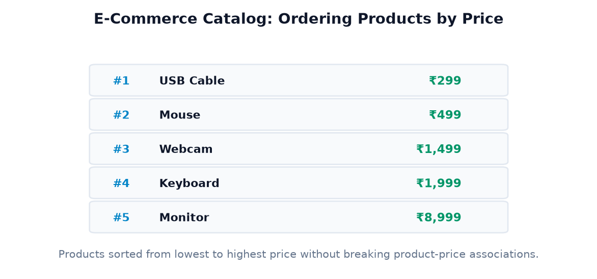
Case 3: Weekly Revenue Analysis & Peak Day
import numpy as np days = np.array(["Mon", "Tue", "Wed", "Thu", "Fri", "Sat", "Sun"]) rev = np.array([12000, 18000, 15000, 22000, 28000, 35000, 31000]) peak_day = days[np.argmax(rev)] low_day = days[np.argmin(rev)] print(f"Highest Revenue Day: {peak_day} (₹{np.max(rev):,})") print(f"Lowest Revenue Day : {low_day} (₹{np.min(rev):,})")
Case 4: Warehouse SKU Inventory Velocity
import numpy as np sku_orders = np.array([501, 502, 501, 505, 502, 501, 503]) u_sku, counts = np.unique(sku_orders, return_counts=True) print("Total Distinct SKUs Sold:", len(u_sku)) top_sku_idx = np.argmax(counts) print(f"Most In-Demand SKU : SKU-{u_sku[top_sku_idx]} ({counts[top_sku_idx]} units)")
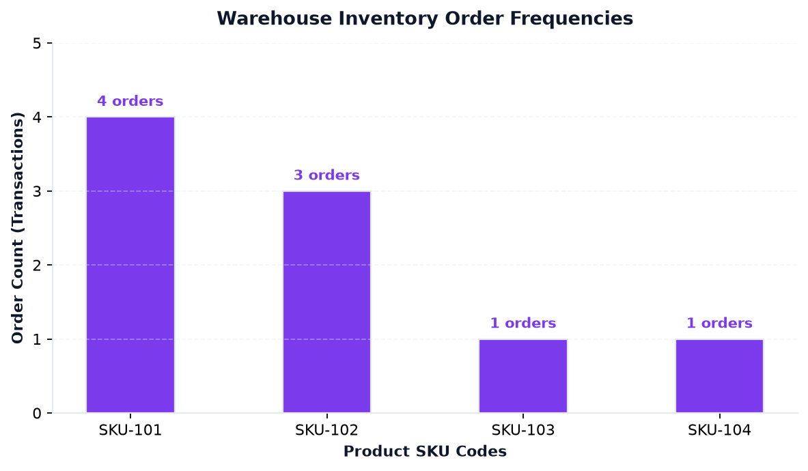
Case 5: Weather Temperatures & Heatwave Thresholds
import numpy as np temps = np.array([28.5, 32.0, 35.5, 29.0, 37.0, 34.0, 30.5]) extreme_days = np.where(temps > 35.0)[0] print("Heatwave Day Indices (>35°C):", extreme_days) print("Recorded Extreme Temps :", temps[extreme_days])
Case 6: Factory Sensor Telemetry Anomaly Detection
import numpy as np telemetry = np.array([102.5, 108.0, 101.2, 115.4, 99.8]) max_fault_val = np.max(telemetry) max_fault_idx = np.argmax(telemetry) print(f"Worst Voltage Spike: {max_fault_val}V at Packet Index #{max_fault_idx}")
Case 7: Customer Rating Distribution
import numpy as np ratings = np.array([5, 4, 5, 3, 2, 5, 4, 1, 4, 5]) stars, freq = np.unique(ratings, return_counts=True) for s, f in zip(stars, freq): print(f"{s} Star Rating: {f} reviews")
15. Section N — Common Beginner Mistakes & Debugging
Mistake 1: Confusing Sorted Values with Sorting Indices
import numpy as np marks = np.array([40, 10, 30, 20]) # Incorrect: Assuming argsort returns sorted values res = np.argsort(marks) print("Result:", res)
Why this happens: np.argsort() index positions return karta hai, numbers nahi! Agar sorted numbers chahiye toh np.sort(marks) ya marks[np.argsort(marks)] likhein.
Mistake 2: Overwriting Array with arr = arr.sort()
import numpy as np arr = np.array([5, 2, 8]) arr = arr.sort() # DANGER: arr is now None! print("arr:", arr)
The Fix: Either write arr.sort() (standalone statement without assignment), or use arr = np.sort(arr).
Mistake 3: Confusing np.argmax() with Maximum Value
import numpy as np marks = np.array([40, 90, 20]) highest = np.argmax(marks) # Returns 1 (index!), not 90! print("Highest Marks:", highest)
The Fix: Actual highest score ke liye np.max(marks) use karein, ya marks[np.argmax(marks)] evaluate karein.
Mistake 4: Running np.searchsorted() on an Unsorted Array
import numpy as np unsorted_arr = np.array([90, 10, 40, 20]) pos = np.searchsorted(unsorted_arr, 30) print("Incorrect Position:", pos)
Why this happens: Binary search tabhi kaam karta hai jab array already sorted ho. Unsorted array par binary search arbitrary/invalid index return karega.
The Fix: Pehle array ko sort karein: np.searchsorted(np.sort(unsorted_arr), 30).
Mistake 5: Expecting np.where(cond) to Return Elements Directly
import numpy as np arr = np.array([10, 20, 30]) res = np.where(arr > 15) print("res type:", type(res)) print("res :", res)
The Fix: np.where(cond) coordinates ka tuple return karta hai. Elements extract karne ke liye array indexing arr[res] ya index array res[0] use karein!
Mistake 6: Column Sorting Destroys Row Record Relationships
import numpy as np # [RollNo, ScienceMarks] data = np.array([ [101, 90], # Student 101 got 90 [102, 40] # Student 102 got 40 ]) # WRONG: np.sort(data, axis=0) sorts RollNo and Marks independently! bad_sort = np.sort(data, axis=0) print("Corrupted Data:\n", bad_sort)
Student 101 ke marks 90 se badal kar 40 ban gaye! Humesha row integrity maintain karne ke liye np.argsort() se row indices nikal kar index karein:
order = np.argsort(data[:, 1]) # Sort by Science marks correct_data = data[order] # Preserves row pairs!
16. Section P — Interactive Practice Suite & Self-Assessment
Har question ke neeche Reveal Solution button par click karke output aur detailed explanation check karein.
Part A: 10 Output Prediction Questions
Prediction 01 arr = np.array([15, 3, 9]) • What is np.sort(arr)[::-1]?
array([15, 9, 3])Explanation:
np.sort(arr) gives [3, 9, 15]. Step slicing [::-1] ise descending order mein reverse kar deta hai.
Prediction 02 arr = np.array([40, 10, 20]) • What is np.argsort(arr)?
array([1, 2, 0])Explanation: Sabse chota element 10 hai (index 1), phir 20 (index 2), aur phir 40 (index 0).
Prediction 03 arr = np.array([5, 8, 8, 2]) • What is np.argmax(arr)?
1Explanation: Maximum value 8 index 1 aur index 2 dono par hai, lekin
argmax() humesha first occurrence index (index 1) return karta hai.
Prediction 04 arr = np.array([10, 20, 30, 40]) • What is np.searchsorted(arr, 25)?
2Explanation: 25 ko index 2 (element 30 ke pehle) insert karne par ascending order maintain rehta hai.
Prediction 05 arr = np.array([4, 1, 4, 2, 1]) • What is np.unique(arr)?
array([1, 2, 4])Explanation:
np.unique() duplicates ko discard karke distinct values ko sorted order mein return karta hai.
Prediction 06 arr = np.array([10, 20, 10]) • What is np.unique(arr, return_counts=True)[1]?
array([2, 1])Explanation: Unique values
[10, 20] hain. Index [1] par frequencies hain: 10 occurs 2 times, 20 occurs 1 time.
Prediction 07 arr = np.array([12, 5, 25, 8]) • What is np.where(arr >= 10)[0]?
array([0, 2])Explanation: 12 (index 0) aur 25 (index 2) condition >= 10 satisfy karte hain.
Prediction 08 arr = np.array([[3, 1], [4, 2]]) • What is np.sort(arr, axis=1)?
array([[1, 3], [2, 4]])Explanation:
axis=1 har row ke andar horizontally elements ko sort karta hai.
Prediction 09 arr = np.array([10, 20, 20, 30]) • What is np.searchsorted(arr, 20, side="right")?
3Explanation:
side="right" repeated 20s ke baad wala insertion index deta hai (jo element 30 ka index 3 hai).
Prediction 10 data = np.array([50, 70, 50, 90]); u, inv = np.unique(data, return_inverse=True) • What is u[inv]?
array([50, 70, 50, 90])Explanation:
return_inverse se prapt index array se unique_values[inv] indexing karne par original array reconstruct ho jata hai.
Part B: 8 Coding Exercises
Exercise 01 Top 3 Highest Scores Nikalna
Problem: Ek student marks array se top 3 highest scores descending order mein extract karein.
import numpy as np marks = np.array([65, 82, 91, 55, 88, 95, 72]) top3 = np.sort(marks)[::-1][:3] print("Top 3 Scores:", top3) # [95, 91, 88]
Exercise 02 Multiple Parallel Arrays ko Score ke Basis par Rank Karna
Problem: Students ke names aur unke roll numbers ko marks ke decreasing order mein arrange karein.
import numpy as np names = np.array(["Rohan", "Pooja", "Aman"]) marks = np.array([75, 92, 84]) ranks = np.argsort(marks)[::-1] print(names[ranks]) # ['Pooja', 'Aman', 'Rohan']
Exercise 03 All Tied Maximum Positions Find Karna
Problem: Ek array mein sabse badi value aur uske saare matching indices find karein.
import numpy as np arr = np.array([12, 45, 30, 45, 20]) max_val = np.max(arr) indices = np.where(arr == max_val)[0] print(f"Max: {max_val}, Indices: {indices}") # Max: 45, Indices: [1, 3]
Exercise 04 Binary Search se Dynamic Price Slot Determine Karna
Problem: Ek sorted price list [100, 250, 500, 1000] mein naya item ₹350 kis position par aayega?
import numpy as np catalog = np.array([100, 250, 500, 1000]) slot = np.searchsorted(catalog, 350) print("Insert at Index:", slot) # Index 2
Exercise 05 Duplicate Elements ki Frequency Table Banana
Problem: Ek survey dataset mein unique response options aur unke vote counts print karein.
import numpy as np votes = np.array(["Yes", "No", "Yes", "Yes", "Maybe", "No"]) u_votes, counts = np.unique(votes, return_counts=True) for v, c in zip(u_votes, counts): print(f"{v}: {c}")
Exercise 06 2D Array ko Specific Column ke According Sort Karna
Problem: Ek 2D table [Roll, MathMarks] ko MathMarks ke descending order mein rank karein bina rows ko tode.
import numpy as np table = np.array([[101, 75], [102, 90], [103, 60]]) order = np.argsort(table[:, 1])[::-1] print(table[order]) # [[102, 90], [101, 75], [103, 60]]
Exercise 07 Categorical String Array ko Integer Label Encode Karna
Problem: Categories ['Cat', 'Dog', 'Bird', 'Dog', 'Cat'] ko return_inverse se integer labels mein map karein.
import numpy as np animals = np.array(["Cat", "Dog", "Bird", "Dog", "Cat"]) u, encoded = np.unique(animals, return_inverse=True) print("Encoded:", encoded) # [1, 2, 0, 2, 1]
Exercise 08 NaN Missing Values ko Remove karke Sort Karna
Problem: Ek raw sensor array jisme np.nan mojud hain, usko securely sort karein.
import numpy as np raw = np.array([45.0, np.nan, 12.0, 88.0, np.nan]) clean = np.sort(raw[~np.isnan(raw)]) print("Cleaned Sorted:", clean) # [12., 45., 88.]
Part C: 8 Multiple Choice Questions
MCQ 01 np.sort() aur ndarray.sort() mein primary difference kya hai?
np.sort() naya sorted copy banata hai; ndarray.sort() array ko in-place modify karta hai aur None return karta hai.Explanation: In-place sorting original array ko change karti hai jabki top-level function original array ko safe rakhta hai.
MCQ 02 np.argsort() ka return value kya hota hai?
Explanation:
np.argsort() se mile indices ko parallel arrays par index karke records rank kiye jaate hain.
MCQ 03 2D array matrix par np.sort(matrix, axis=0) kis direction mein sort karta hai?
Explanation:
axis=0 columns ke andar vertical sorting perform karta hai.
MCQ 04 np.argmax() array mein duplicate maximum values hone par kaunsa index return karta hai?
Explanation: Tied maximums ke saare indices paane ke liye
np.where(arr == np.max(arr))[0] use kiya jata hai.
MCQ 05 np.searchsorted() use karne se pehle array ki mandatory prerequisite kya hai?
Explanation:
np.searchsorted() binary search use karta hai jo sirf sorted data par valid results produce karta hai.
MCQ 06 np.unique(data, return_counts=True) kya return karta hai?
(unique_values, occurrence_counts).Explanation: Isse category frequency distributions aur histograms direct C-speed par calculate ho jaate hain.
MCQ 07 np.unique() mein return_inverse=True ka main practical benefit kya hai?
Explanation:
unique_vals[inverse_indices] exactly original array generate karta hai.
MCQ 08 Agar array mein NaN mojud ho, toh np.sort() use kahan place karta hai?
Explanation: IEEE 754 float sorting convention ke hisaab se NaN values ko highest order index par end mein place kiya jata hai.
Part D: 3 Real-Life Mini-Challenges
Challenge 01 Customer Purchase Basket Frequency
Scenario: 1000 orders ka product ID array hai. Sabse zyada khareeda gaya top-selling product ID aur uske total purchase orders find karein.
import numpy as np orders = np.array([101, 105, 101, 102, 105, 101, 103, 101, 105]) u_ids, counts = np.unique(orders, return_counts=True) top_pos = np.argmax(counts) print(f"Best Seller: SKU-{u_ids[top_pos]} with {counts[top_pos]} orders")
Challenge 02 Salary Band Binning with searchsorted
Scenario: Tax slabs [250000, 500000, 1000000, 1500000] define hain. Diye gaye employee salaries [450000, 1200000, 200000] kis tax slab bracket index mein aayenge?
import numpy as np slabs = np.array([250000, 500000, 1000000, 1500000]) salaries = np.array([450000, 1200000, 200000]) bracket_indices = np.searchsorted(slabs, salaries) print("Tax Bracket Indices:", bracket_indices) # [1, 3, 0]
Challenge 03 Multi-Subject Merit Ranking
Scenario: 5 students ke 3 subjects ke marks ka 2D array hai. Har student ke Total Marks calculate karke rank order nikalen aur top student announce karein.
import numpy as np names = np.array(["Aman", "Bhavna", "Chirag", "Divya", "Esha"]) marks = np.array([ [78, 85, 90], # Aman: 253 [92, 88, 95], # Bhavna: 275 (Topper!) [65, 70, 72], # Chirag: 207 [85, 80, 88], # Divya: 253 [90, 91, 89] # Esha: 270 ]) totals = np.sum(marks, axis=1) ranks = np.argsort(totals)[::-1] print(f"Batch Topper: {names[ranks[0]]} with {totals[ranks[0]]} aggregate marks!")
17. Section Q — Capstone Mini-Project: Smart Data Explorer
NumPy ke Sorting, Searching, aur Unique Value operations ko integrate karke ek complete end-to-end data analytics script build karte hain.
import numpy as np print("==================================================") print(" CODEVERSE SMART DATA EXPLORER ") print("==================================================") # ------------------------------------------------------------ # MODULE 1: STUDENT PERFORMANCE ANALYTICS # ------------------------------------------------------------ proj_marks = np.array([75, 92, 88, 92, 64, 81, 95, 70]) proj_names = np.array(["Amit", "Bhavna", "Chirag", "Divya", "Esha", "Farhan", "Geeta", "Harsh"]) # 1. Basic sorting sorted_marks_asc = np.sort(proj_marks) sorted_marks_desc = np.sort(proj_marks)[::-1] # 2. Extremes highest = np.max(proj_marks) lowest = np.min(proj_marks) topper_name = proj_names[np.argmax(proj_marks)] lowest_name = proj_names[np.argmin(proj_marks)] # 3. Parallel ranking with argsort ranking_idx = np.argsort(proj_marks)[::-1] # 4. Tied maximums check tied_toppers = np.where(proj_marks == 92)[0] # 5. Unique scores u_scores, u_counts = np.unique(proj_marks, return_counts=True) print("\n>>> 1. Academic Performance Summary:") print(f" Highest Score : {highest} (Topper: {topper_name})") print(f" Lowest Score : {lowest} (Student: {lowest_name})") print(f" Top 3 Rankers : {list(proj_names[ranking_idx[:3]])}") print(f" Tied at 92 pts: {list(proj_names[tied_toppers])}") print(f" Unique Scores : {list(u_scores)}") # ------------------------------------------------------------ # MODULE 2: RETAIL STORE PRICING & CATALOG SEARCH # ------------------------------------------------------------ item_names = np.array(["USB Cable", "Mechanical Keyboard", "Wireless Mouse", "Monitor 24in", "Webcam HD"]) item_prices = np.array([299, 2499, 799, 8999, 1899]) item_ids = np.array([101, 105, 102, 109, 105, 101, 101]) # Price sorted ordering price_order = np.argsort(item_prices) # Search for exact item at ₹799 target_idx = np.where(item_prices == 799)[0] # Searchsorted: Where does a ₹1500 product fit? sorted_cat_prices = np.sort(item_prices) insert_slot = np.searchsorted(sorted_cat_prices, 1500) # Inventory SKU frequencies u_skus, sku_freq = np.unique(item_ids, return_counts=True) print("\n>>> 2. Retail Catalog & Inventory Analysis:") print(f" Cheapest Item : {item_names[price_order[0]]} (₹{item_prices[price_order[0]]})") print(f" Most Expensive : {item_names[price_order[-1]]} (₹{item_prices[price_order[-1]]})") print(f" ₹799 Item Match: {item_names[target_idx[0]]}") print(f" ₹1500 Slot Idx : {insert_slot} (between ₹{sorted_cat_prices[insert_slot-1]} & ₹{sorted_cat_prices[insert_slot]})") print(f" SKU Frequencies: {dict(zip(u_skus, sku_freq))}") print("==================================================")
18. Section R — Topic 13 Function Cheat Sheet & Summary
NumPy Topic 13 ke saare functions ka rapid lookup table:
| Function / Method | Return Value | In-Place? | Primary Purpose & Example |
|---|---|---|---|
np.sort(arr) |
New sorted array | No (Copy) | Values ko ascending sequence mein sort karna: np.sort(arr) |
arr.sort() |
None |
Yes (In-Place) | Existing memory buffer ko modify karna: arr.sort() |
np.sort(arr)[::-1] |
Reversed array | No (Copy) | Descending (high to low) order paana |
np.sort(2D, axis=1) |
Sorted 2D matrix | No (Copy) | Horizontally har row ko sort karna |
np.sort(2D, axis=0) |
Sorted 2D matrix | No (Copy) | Vertically har column ko sort karna (Warning: breaks row pairs) |
np.argsort(arr) |
Index array (int) | No | Indirect ranking; parallel arrays sync karna: names[np.argsort(marks)] |
np.where(condition) |
Tuple of indices | No | Criteria satisfy karne wale coordinates find karna: np.where(arr > 50)[0] |
np.argmax(arr) |
Integer index | No | Highest element ki position find karna: np.argmax(arr) |
np.argmin(arr) |
Integer index | No | Lowest element ki position find karna: np.argmin(arr) |
np.searchsorted(a, v) |
Insertion index | No | Sorted array mein order maintain karte hue insertion slot find karna |
np.unique(arr) |
Distinct sorted array | No | Duplicates remove karke unique categories nikalna |
return_counts=True |
Tuple (unique, counts) | No | Category frequency distribution count calculate karna |
return_index=True |
Tuple (unique, first_idx) | No | Har distinct value ki first occurrence position locate karna |
return_inverse=True |
Tuple (unique, inv_idx) | No | Original array reconstruct karna aur categorical label encoding karna |